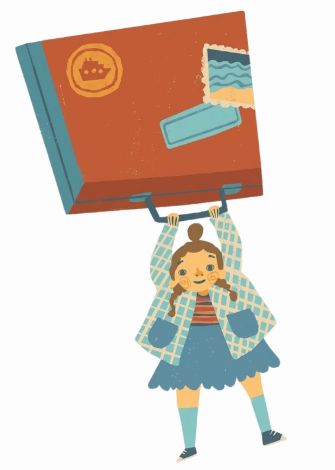

1 Sme3 had l-hiwar. Men b3d, qra.
Gloria: — Ahlan, Greta!
Greta: — ¡Hola!, ciao, salut, hallo!
Gloria: — Shno qolti? Ma fhamt ta7aja.
Greta: — Qolt ahlan.
Gloria: — Qolti ahlan? Ewa, ma sma3thash.
Greta: — Hit qaltha b l-sbania, l-italiat, l-fransia o l-almania.
Gloria: — Walakin wash tteqdi ttehdri b had l-lughat kamlin?
Greta: — Mazal, walakin qrrt beli ghad nt3llem lihom.
Gloria: — O 3lash bghiti tt3llmi lihom?
Greta: — Hit melli nkor, ghad ntsara l-3alam kamel l-kbeer. Ghad nshouf l-blays kamlin lli kyhdro 3lihom f l-madrassa. O fkkert beli ila bghit nttasl m3a l-nas lli ghad ntlqa f l-sfar dyali, khsni l-owwel nt3llem lughat dyalhom.
Gloria: — 3ndek l-7aq! I3jebni bzzaf ntsara m3ak. Walakin ma kan3ref ta lughat khrin.
Greta: — Ila bghiti, nqdro nt3llmo mjm3in. Wash ban lek mezian?
Gloria: — Ghad ykoon shi 7aja ghazala! Wash nbdao daba nesh?
Greta: — ¡Por supuesto!
